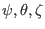

Next:
Coordinates transformation and Jacobian
Up:
Notes on tokamak equilibrium
Previous:
Free boundary equilibrium problem
Curvilinear coordinate system
Subsections
Coordinates transformation and Jacobian
Orthogonality relation
Example: (

) coordinates
Gradient and directional derivative in general coordinates
Divergence operator in general coordinates
Laplacian operator in general coordinates
Curl operator in general coordinates
Metric tensor for general coordinate system
Special case: metric tensor for
coordinate system
Covariant and contravariant representation of equilibrium magnetic field
yj 2018-03-09